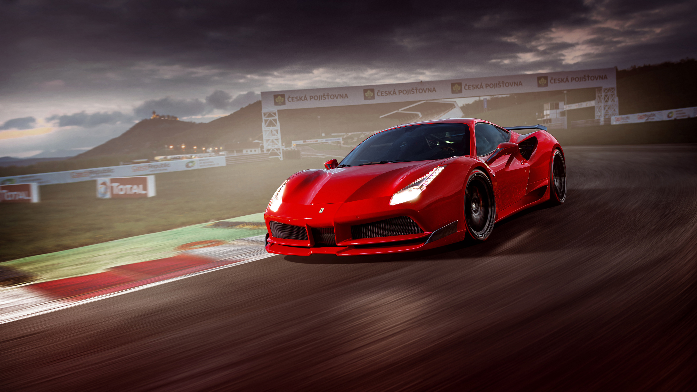

Ferrari
La ferrari è una casa automobilistica italiana fondata da Enzo Ferrari nel 1947 a Maranello in provincia di Modena.Produttrice di automobili sportive d'alta fascia e da corsa e impegnata nell'automobilismo sportivo, è la più titolata nel campionato del mondo di Formula Uno, dove ha conquistato quindici titoli e sedici costruttori, nonché una delle più vincenti nelle competizioni per vetture Sport, Prototipo, Sport Prototipo e Gran Turismo come il campionato del mondo Sportprototipi, con dodici titoli costruttori ottenuti e il campionato del mondo Endurance FIA, dove detiene quattro titoli costruttori GT e due titoli piloti GT.
Si è affermata più volte in classiche gare endurance quali la 24 Ore di Le Mans, la 12 Ore di Sebring e la 24 Ore di Daytona e in gare su tracciato stradale come la Targa Florio, la Mille Miglia e la Carrera Panamericana.
Le sue origini sportive risalgono già al 1929, quando Enzo Ferrari diede origine a Modena alla Scuderia Ferrari, che è tuttora la divisione principale del reparto corse della Ferrari, essendo da sempre impegnata in Formula 1 e avendo corso nel campionato del mondo Sport Prototipi fino al 1973.
Il dipartimento Ferrari Corse Clienti invece si occupa del supporto tramite la sezione competizioni GT ai team clienti che corrono nei campionati GT presenti a livello internazionale, il campionato del mondo Endurance FIA innanzitutto e della gestione di Ferrari Challenge, XX Programmes e F1 Clienti.
| modello | n. modelli venduti | anno statistiche |
|---|---|---|
| 458 | 8.450 | 2016 |
| 488 | 7.367 | 2016 |
| california | 5.381 | 2016 |
| f 12 | 3.978 | 2016 |
| gtc4 | 2.300 | 2016 |
Ceduto personalmente dalla madre di Baracca come portafortuna a Enzo Ferrari nel 1923, sarebbe divenuto l'emblema del marchio Ferrari e del reparto corse.
Nel 2013 e nel 2014 il marchio è stato riconosciuto come il più influente al mondo.
Dal 21 luglio 2018 l'azienda, come la controllante Ferrari N.V. è guidata da Louis Carey Camilleri, in qualità di amministratore delegato, mentre John Elkann ne è il presidente.
Entrambi sono succeduti a Sergio Marchionne pochi giorni prima della sua morte, che guidava l'azienda dal 2014, quando aveva sostituito Luca Montezemolo.
Enzo ferrari fondò la Scuderia Ferrari, che è tuttora la divisione principale del reparto corse della Ferrari, nel 1929 a Modena.
Fino al 1932 la Scuderia Ferrari ricoprì il ruolo di filiale tecnico-agonistica dell'Alfa Romeo, mentre a partire dal 1933 ne divenne il reparto corse iniziando a occuparsi di progettazione e di gestione delle vetture da competizione.
Tale impegno proseguì con successo fino alla fine del 1937, quando la scuderia fu sciolta e l'Alfa Romeo allestì un nuovo reparto corse con a capo Enzo Ferrari.